Case Study
TagAdGroup
The Website That Didn't Match The Business Behind It
Real product design isn't a list of fixes. It is a story of decisions, trade-offs, and the moments that shifted the direction of the entire project.
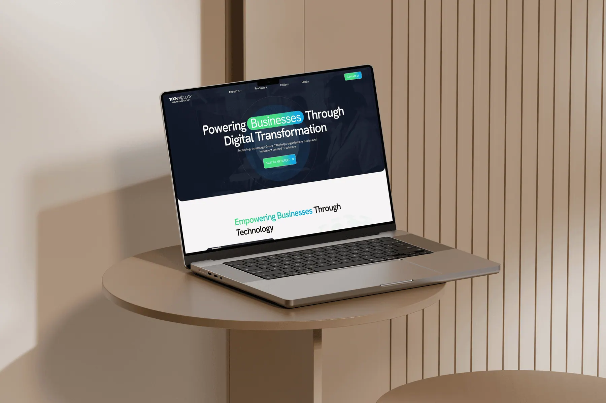
// Context
Why the website was failing TAG
TAG sells enterprise IT products to procurement heads & C-suite buyers. The bar for credibility is high. Yet their site was outdated, broken on mobile, inaccessible, & missing pages for half their product portfolio. The digital front door didn't match the quality behind it.
Visitor Pain
No pages for key products - no path to enquiry.
Compliance Gap
Site failed WCAG a risk with public sector clients.
Mobile Failure
Broken layout silently turned away mobile visitors.
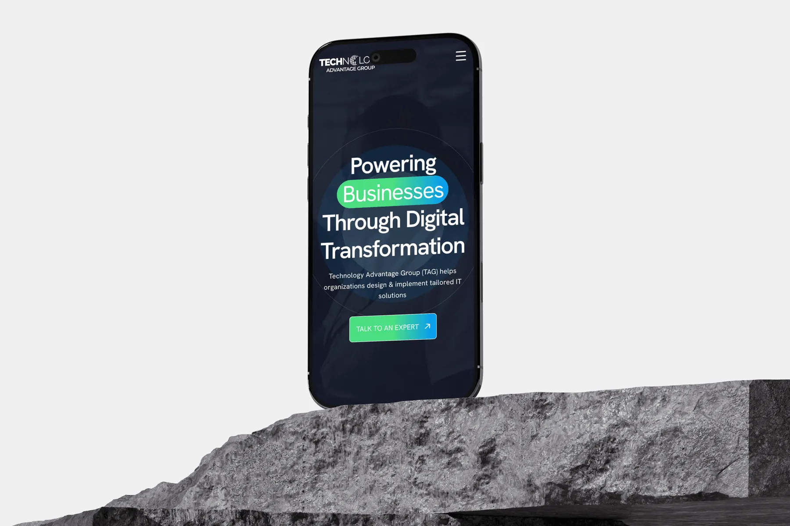
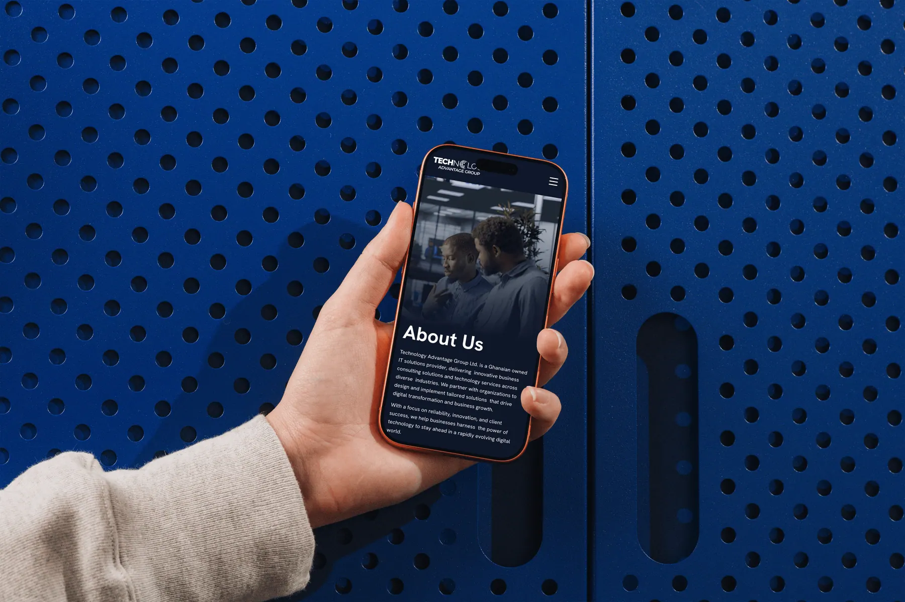
Why I built missing product pages instead of just improving what existed.
The brief was framed as a visual refresh. But when I mapped TAG's portfolio against the site, five core offerings had zero representation - not a weak page, no page at all.
The Epiphany Hit
Polishing existing pages wouldn't matter if a buyer searching for a Ghanaian firewall vendor found nothing on arrival. We had to build the missing floors before renovating the lobby.
Before
Half the portfolio invisible online. No pages, no enquiry path, no presence.
After
New product pages built from scratch - each with a value proposition, feature grid, and CTA.
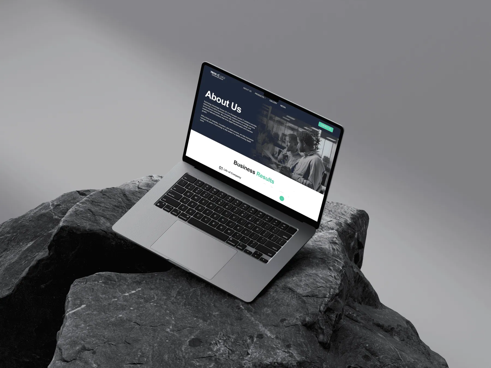
Why I treated WCAG compliance as a business requirement - not a design task.
Accessibility came up in the audit. The instinct was to address it last, after the visual work. I pushed back. TAG's clients include government bodies with their own compliance obligations.
Before
Contrast failures, no keyboard nav, missing alt text. An IT vendor whose own site failed accessibility.
After
WCAG 2.1 AA compliance built in from the start - contrast, semantics, keyboard support, ARIA labels.
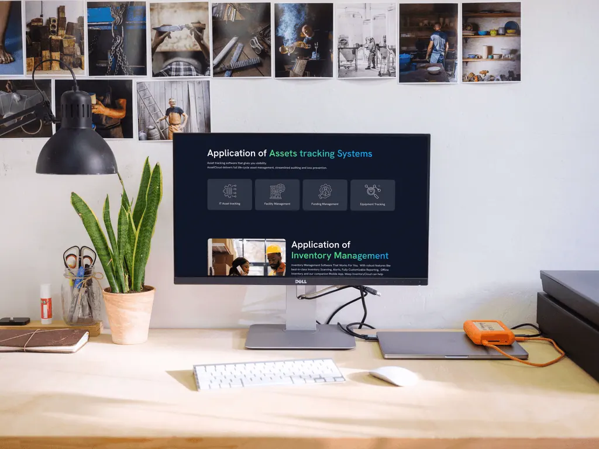
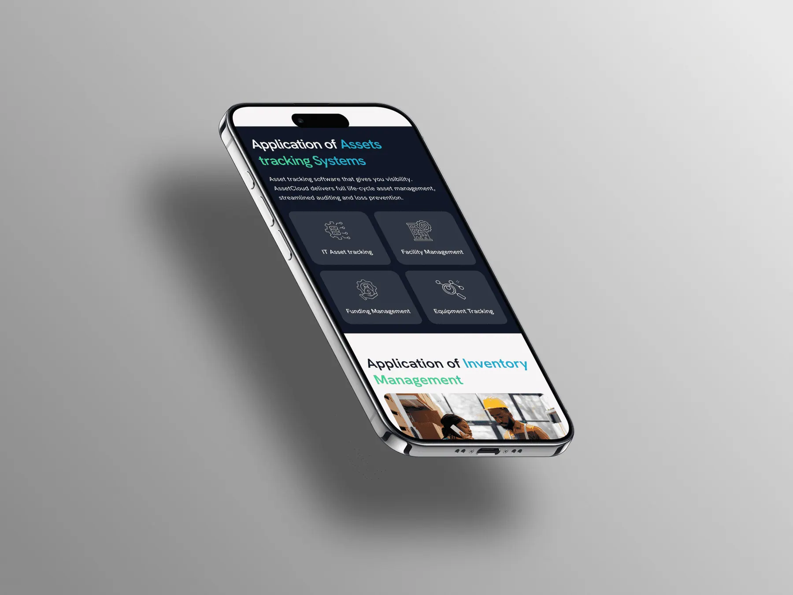
Visual Evolution
Moving from dense to hierarchical
Moving from a dense, text-heavy interface to a spacious, hierarchical design system.
Old Website
WCAG, no proper UI
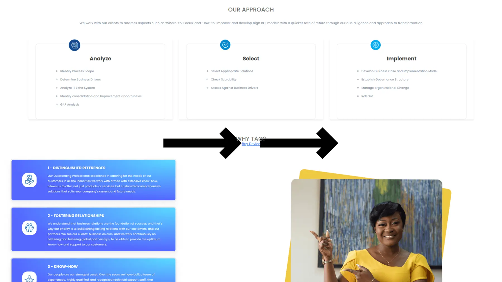
New Redesign
Structured & Scannable
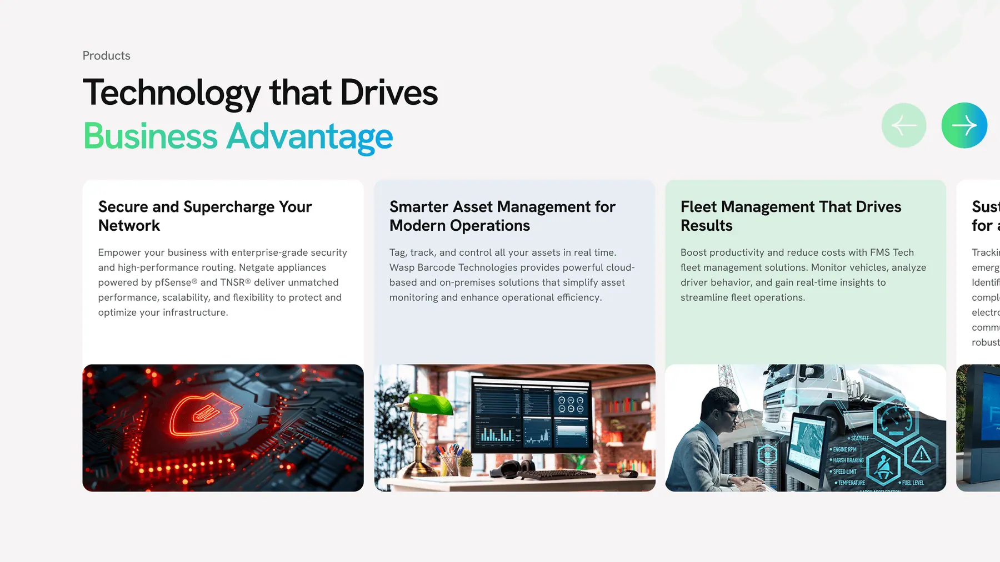
Home Page Exploration
We explored three distinct narrative directions. Rather than selecting a single concept directly, the client and I worked together to synthesize the strongest elements from each into a unified design that aligned with business goals.
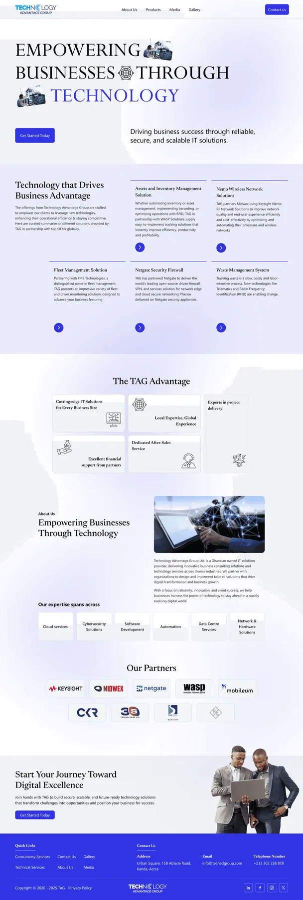
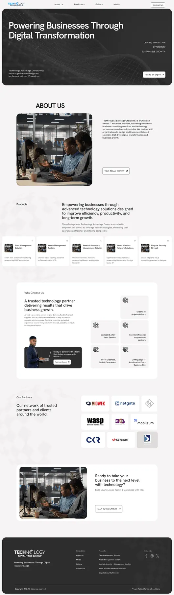
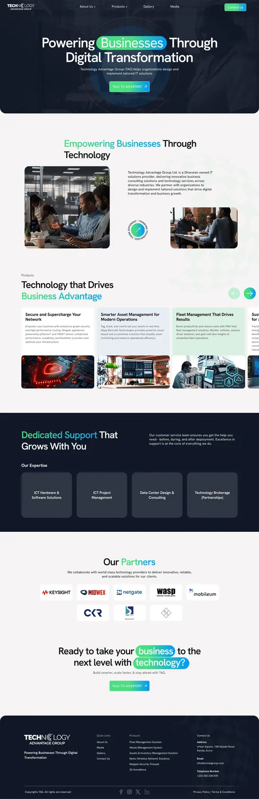
Why I restructured every page for enterprise scanners - not general readers.
TAG's products are technical. The old content tried to explain everything in dense paragraphs. The instinct is to add more detail. For this audience, that instinct is wrong.
The Epiphany Hit
"Enterprise buyers don't read websites they scan them. A procurement manager has six other tabs open. They need three answers in thirty seconds: what it does, who uses it, and how to start a conversation. If the page makes them work for that, it has already failed."
Before
Dense paragraphs buried the value proposition. Visitors had to work hard to understand what TAG offered.
After
Scannable hierarchy on every page - bold value statement → features grid → single CTA. Designed for how buyers actually evaluate vendors.
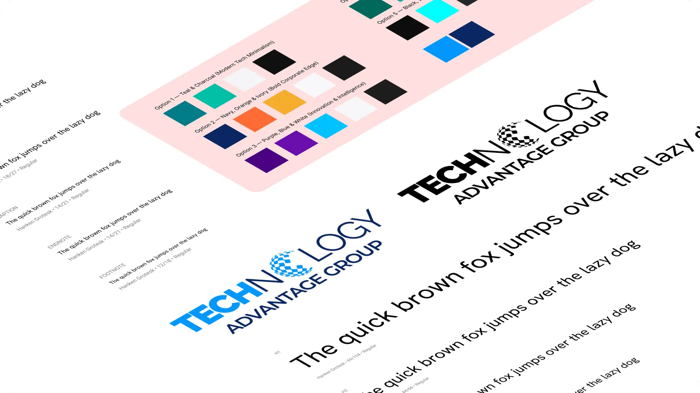
// Outcomes
What the redesign delivered
WCAG 2.1 AA
Full accessibility compliance across all pages
Fully Responsive
Clean layout across all viewports
New Pages
Missing product offerings now fully represented
Consistent Content
Unified tone, hierarchy, and alignment
Beyond Expectations
The redesign reinforced the importance of a digital presence that mirrors business credibility. The new site gives enterprise buyers the confidence signal they need accessible, responsive, and complete. The client received positive feedback post-launch, particularly on the intuitive experience and the new product pages that finally gave their full portfolio a home on the web.
Let's Craft Quietly
Have a project in mind?
Let's bring it to life gently.